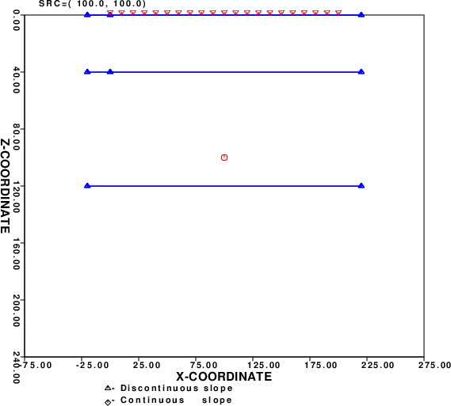
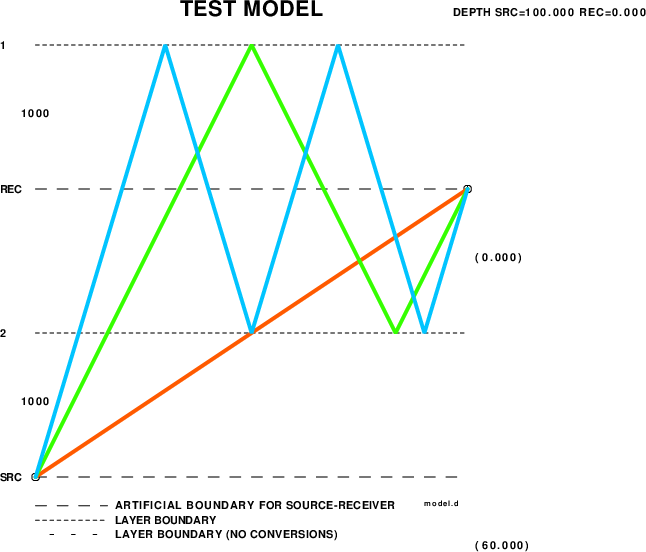

Layer1
The purpose here is two fold - to make synthetics and then to make
receiver functions from them. We examine a horizontal profile with
observations at the surface
between x-coordinates if 0 and 200 km. The source is placed at
(100,100), e.g., an x-coordinate of 100 km
and a depth of 100 km.
The velocity model is contained within the DOIT file. The
receiver positions are also defined in this file. The sequence of
commands to
make the Sac files is just
cprep96 -M model.d -d dfile -HS 100 -XS 100 -HR 0 -DOALL -DOCONV
cseis96 -R > cseis96.out
cpulse96 -V -p -l 4 -EXF -DELAY 10 | f96tosac -B
cray96 -XMIN -50 -XMAX 250 -ZMIN 0 -ZMAX 150
cprep96 creates the following two plots
CPREP96M.PLT
 |
CPREP96R.PLT
 |
cprep96 creates two plot files. CPREP96M.PLT is a
plot of the model and CPREP96R.PLT is a plot of the rays.
cray96 creates the following plot:
which shows all of the ray paths. In the example Layer2 the results
for just one ray will be shown.
After the computations are completed the script DOPLT is
run to plot record sections, and in this simple case compare the
receiver function from the synthetic at receiver position 200 km
to the analytic value using hrftn96. The plots are in the
next two figures.
This is the output of cpulse96. gsac was used to
make the plot. Note that this is a relative amplitude plot. The peak
amplitude of each traces has the same amplitude on the plot. In the
plots, a positive amplitude is to the left. At the station at 200
km, the initial Z and R are positive. The initial P wave is in a
direction upward and to the right away from the source. At a
distance of 0 km, the ray leaves the source up and to the left. The
initial P motion here is
up on the vertical and down on the horizontal, meaning in the
negative z-direction, which is what is expected. The normal
use of R meaning Radial away form the source does not apply here.
The computation of the receiver function presents an opportunity
to better understand the meaning of the entry in column 8 of cseis96.amp.
For the receiver distance of 200 km, this line for the direct P
ray is
1 21 0.19849E+02 0.11161E-01 0.13669E-01 0.31416E+01 0.00000E+00 -0.696068E+00 1 0.33000E+01 0.80000E+01 0.00000E+00 0.28000E+01 0.60000E+01
The angle -0.696068E+00 in radians is measured with respect to the
horizontal and corresponds to 39.3968 degrees. The angle required
for the ray parameter is measured with respect to the vertical and
is thus 50.083 degrees. The ray parameter is sin(50.083
degrees)/8.0 = 0.09587 s/km. Since this is a plane layered
model, time96 can be used to get the plane wave ray
parameter and the travel time by the commands
time96 -EVDP 100 -DIST 100 -M model.d -P -RAYP
time96 -EVDP 100 -DIST 100 -M model.d
From these two commands one obtains 9.59405228E-02 s/km for the ray
parameter and 19.8530426s for the travel time.
in addition the negative value indicates that this ray goes up from
the source. Since it is greater than -π/2, the ray goes upward and
to the right of the source.
Exercises
- The comparison of receiver functions was not exact. What is
the effect of using a smaller value of dt in the
synthetics.
Answer: a little bit using dt - 0.0625s.
- Test whether the problem was due to the use of curved
wavefronts in cseis96 rather than the assumed incident
plane wave by placing the source deeper, e.g., perhaps 2000 km.
Answer: Yes, much better even with the original dt of 0.125s.